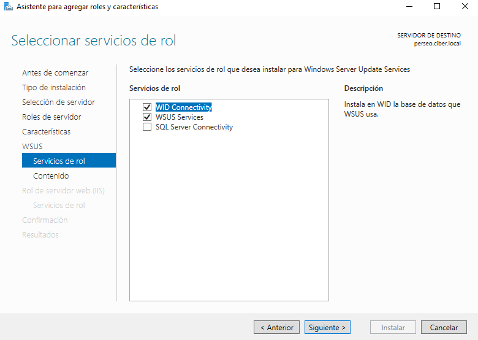
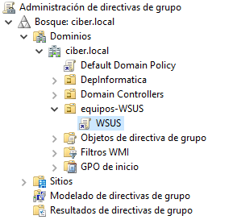
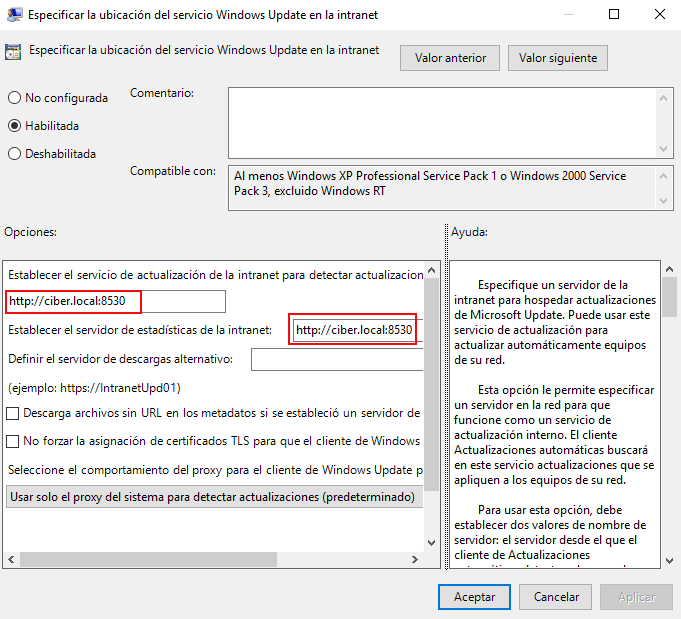

5.2 WSUS
1. Introducción
Microsoft Windows Server tiene disponible un rol denominado Windows Server Update Services (WSUS) que permite centralizar las actualizaciones de los equipos del dominio, es decir, centraliza un servidor de actualizaciones para clientes y servidores del dominio.
El servidor WSUS descarga las actualizaciones desde los servidores de Microsoft Windows y éste se encargará de distribuir las actualizaciones a los equipos del dominio.
En este capítulo, se describe el procedimiento de cómo instalar y configurar WSUS, para permitir a los administradores de sistemas gestionar actualizaciones a un conjunto de equipos en su red mediante el sistema de Microsoft Update.
1.1 Cosas a favor y en contra
A favor:
- Al tener centralizadas las actualizaciones evita que el ancho de banda de la red quede saturado ya que solamente el servidor es el que realizará la descarga por lo que se ahorrará tiempo en las actualizaciones y mejora la seguridad de la red ya que se alcanza el nivel de privacidad SHA256. WSUS, además, da la posibilidad de que los administradores o el mismo servidor permita o no ciertas actualizaciones.
- Control total sobre qué actualizaciones y parches de seguridad sobre cada uno de los equipos de la red.
- Dependencia cero del usuario final para que de esta forma, se pueda tener una seguridad óptima en cuanto a brechas de seguridad o parches claves sobre vulnerabilidades recientes.
Contras:
- En infraestructuras pequeñas depender de un equipo dedicado únicamente al rol de WSUS puede llegar a suponer un coste elevado (consumo de energía, mantenimiento del equipo, espacio físico, calor, ruido, etcétera).
- No es recomendable instalar el servidor WSUS en un controlador de dominio ya que puede corromper la base de datos o crear problemas al actualizar o instalar WSUS.
Si sólamente se necesita para unos pocos equipos, en estos casos se puede hacer uso de las actualizaciones fuera de horas activas.
2. Requisitos - Escenario
| Equipo Windows Server 2019 Datacenter |
|
| Equipo Windows 10 Enterprise |
|
A la hora de instalar el rol de WSUS el sistema debe de tener una serie de requisitos mínimos:
- Procesador x64 de 1,4GHz.
- Adaptador de red de al menos 100 Mbps.
- 2 GB más de memoria RAM (si el servidor tiene 4GB, con WSUS debe tener 6GB).
- 10 GB de espacio disponible y 40 GB recomendado.
A continuación, se describe gráficamente la configuración de la red del servidor y el equipo cliente.
Servidor Windows 2019 Server Datacenter
Configuración tcp/ip
Estado de la red
Propiedades de la red
Cliente Windows 10 Enterprise
Configuración tcp/ip
Estado de la red
Para la puesta en producción del servicio hay que seguir las siguientes etapas:
- Instalación del rol.
- Configuración de WSUS.
- Configurar GPOs para WSUS.
- Sincronizar WSUS y Microsoft Update.
- Aprobación e implementación de las actualizaciones en WSUS o rechazar actualizaciones con WSUS.
- Configuración de las directivas de grupo para las actualizaciones automáticas.
3. Instalación de WSUS
En primer lugar, el equipo servidor tiene que disponer de 2 discos, uno de ellos con el sistema operativo de Windows y otro, bastante amplio, donde se irán almacenando las actualizaciones de Windows para repartir a los equipos del dominio. Para este caso de ejemplo, se añade un disco de 20 GiB.
Figura 1. Discos en el equipo.
A continuación, hay que acceder al Administrador del servidor y agregar un nuevo rol:
Figura 2. Agregar roles y características.
A continuación, hay que seleccionar 'Instalación basada en características o en roles'.
Figura 3. Seleccionar tipo de instalación.
Seguidamente, hay que marcar nuestro servidor, el lugar donde se procederá a instalar el servicio de WSUS.
Figura 4. Seleccionar servidor de destino.
Seleccionaremos la característica Windows Server Update Services, donde el asistente pregunta si se desea agregar las características. Para continuar,hay que pulsar 'Aceptar. Tras haber seleccionado las características, hay que pulsar 'Siguiente'.
Figura 5. Seleccionar el rol Windows Server Update Services.
En la siguiente pantalla que aparece 'Seleccionar características', hay que pulsar 'Siguiente'.
Figura 6. Seleccionar características.
Al seleccionar los servicios de rol a instalar, se deja por defecto.

Figura 7. Seleccionar servicios de rol.
A continuación, hay que especificar la ubicación donde se almacenarán las actualizaciones de Windows que se instalarán en los equipos del dominio. Para este caso de ejemplo, el disco que se ha definido al inicio E:\. Para continuar, hay que pulsar 'Siguiente'.
Figura 8. Seleccionar de ubicación de contenido.
En la nueva pantalla, se deja todo por defecto y se pulsa 'Siguiente'

Figura 9. Seleccionar servicios de rol.
Para finalizar, en la nueva pantalla, hay que pulsar 'Instalar' (opcionalmente, se activa el Reinicio automático).
Figura 10. Confirmar selecciones de instalación.
A continuación, comienza el proceso de instalación.
Figura 11. Progreso de instalación.
4. Configuración de WSUS
Una vez terminada la instalación se deberá realizar la configuración del servidor. Para ello, hay que pulsar el enlace 'Iniciar tareas posteriores a la instalación' (ver figura inferior).
Figura 12. Seleccionar configuración posterior a la instalación.
Las etapas son las siguientes:
- Aparecerá un asistente cuya primera ventana son las comprobaciones que se deberán hacer antes de configurar. Se comprueban y se pulsa en siguiente.
- La siguiente ventana habla de participar o no en el programa de mejora. Se pulsa siguiente.
- La tercera ventana da la opción si se pretende sincronizar con las actualizaciones desde Microsoft Update o desde otro servidor WSUS. En este caso, se selecciona la primera opción.
- A continuación, si se usa un servidor proxy se marcará la opción. En este caso no se marcará y se selecciona siguiente.
- Llegados a este punto, se procederá a conectarse para descargar los productos Microsoft, por lo que se pulsa en “Iniciar conexión”. La descarga puede tardar unos minutos.
- Una vez terminada la descarga, el botón siguiente ya estará habilitado, por lo que se pulsará y a continuación, en la siguiente ventana, se configurarán los idiomas de las actualizaciones. En este caso se ha seleccionado español y se pulsa siguiente.
- Una vez elegido el idioma, se seleccionan los productos que estarán disponibles para recibir actualizaciones de manera desatendida. Hay que tener en cuenta que las actualizaciones de drivers es conveniente hacerlas manuales para evitar tener problemas de compatibilidad con otros programas. En este caso se han marcado las actualizaciones de Windows 10 y Windows 11, Microsoft Edge y Microsoft Defender Antivirus.
- En la siguiente ventana, se marcarán las opciones de actualizaciones críticas y actualizaciones de seguridad.
- A continuación, en la siguiente ventana, se marcará la sincronización automática con los servidores de Microsoft Update. Si se estuviera hablando de una empresa grande, sería conveniente elegir una hora en la que hay menos carga de trabajo, por ejemplo, si se pretende sincronizar todos los días, podría ser a una hora de madrugada, por ejemplo, a las 01 A.M.
- Al seleccionar siguiente, el asistente da la opción de realizar una primera sincronización. Por lo que se marca la opción y se realiza.
- En el último paso, el asistente sugiere algunas buenas prácticas como, por ejemplo, usar el protocolo SSL con WSUS o crear grupos de equipos, etcétera. Se marcará finalizar. Aprobaciones automáticas donde se pueden crear reglas para aprobar actualizaciones automáticas. Por ejemplo: especificar en una nueva regla si aparece una nueva actualización crítica que sea aprobada automáticamente para que se actualicen todos los equipos o solo unos equipos específicos.
- Equipos: en donde se puede especificar la forma en la que se unen los equipos a los grupos de actualizaciones. Lo más recomendable es que sea a partir de una directiva de grupo.
- Asistente para la limpieza del servidor. Cada cierto tiempo, es recomendable aplicar una limpieza del servidor WSUS ya que, de lo contrario, el funcionamiento no es el más óptimo presentando errores y de esta manera, la base de datos es reseteada eliminando actualizaciones que ya han sido reemplazadas, etcétera.
A continuación, se describe los puntos gráficamente.
Acceder a los Servicios de Actualización de Windows.
Figura 13. Acceder a Windows Server Update Services.
Se abrirá un Asistente donde en primer lugar hay que pulsar 'Siguiente'.
Figura 14. Asistente par la configuración de Windows Server Update Services.
A continuación, aparece una nueva ventana donde se puede seleccionar si se quiere unir al programa de mejora de Windows Update. Para este caso de ejemplo, se desactiva esta posibilidad.
Figura 15. Posibilidad de unirse al programa de mejora de Windows Update.
A continuación, hay que elegir 'sincronizar desde Microsoft Update' ya que será nuestro servidor principal de Actualizaciones.
Figura 16. Elegir 'sincronizar desde Microsoft Update' ya que será nuestro servidor principal de Actualizaciones.
En la siguiente ventana, no hay que definir ningún proxy. Para continuar, hay que pulsar Siguiente.
Figura 17. Selección de proxy.
A continuación, hay que pulsar en 'Iniciar conexión' y esperar a que el servidor aplique las configuraciones necesarias y descargue las actualizaciones que serán aplicadas en un futuro a los equipos del dominio.

Figura 18. Esperar a que se apliquen las configuraciones.
En la siguiente pantalla, hay que seleccionar el idioma en el que se desea que se descarguen las actualizaciones que, por defecto, se dejan en inglés y español.
Figura 19. Selección de idiomas.
En la siguiente ventana hay que definir aquellos productos que se quieran que sean actualizados. Dependiendo de los equipos que se tengan en la red, hay que mantener la selección de los productos Windows necesarios y deseleccionar el resto, ejemplo: los referidos a Windows XP, 7, 8.1, etcétera.
Figura 20. Definir productos a actualizar.
A continuación, hay que especificar qué actualizaciones se desean descargar. Para nuestro caso de ejemplo, se deja todo por defecto.
Figura 21. Especificar las actualizaciones a descargar.
En la siguiente ventana, hay que especificar cuándo se desea que se sincronicen las actualizaciones. Para este caso de ejemplo, se realizará de manera manual.
Figura 22. Especificar cuándo se desea que se sincronicen las actualizaciones.
A continuación, se selecciona 'sincronización inicial' para descargar aquellas actualizaciones que sean necesarias actualmente. Pulsar 'Siguiente' para continuar.
Figura 23. Seleccionar sincronización inicial.
En la nueva pantalla, se muestra un listado de recomendaciones para configurar que hay que tener en cuenta para dejar completamente operativo el servicio de WSUS y que se configurará a continuación. Para realizar la sincronización inicial, hay que pulsar 'Finalizar'.
Figura 24. Pasos para integrar WSUS en el entorno.
Una vez finalice, se podrá ver una ventana donde mostrará el estado actual de los equipos de nuestro dominio, pudiendo observar tanto aquellos que están actualizados como aquellos que todavía les faltan actualizaciones.
Figura 25. Pantalla principal de WSUS.
Como se puede ver en la figura anterior, la consola está dividida en 3 paneles.
- En el panel central se muestra información de aquello que se selecciona.
- En el panel de la izquierda y el panel de la derecha, muestra acciones que se pueden realizar.
En el panel superior izquierdo, se puede ver el servidor sobre el que se despliegan opciones. Si se selecciona el servidor WSUS, el panel central muestra información sobre tareas pendientes. Estas tareas son actualizaciones que están esperando para ser aprobadas y productos agregados. Se puede pulsar sobre los enlaces azules de la imagen anterior y se podrá acceder a aprobar las actualizaciones de seguridad, críticas o ver los productos y clasificaciones.
En la parte inferior del panel central se muestra información general sobre los equipos y sobre el mismo servidor con respecto a la conexión y actualizaciones.
Siguiendo con el panel de la izquierda, si se selecciona actualizaciones, el panel central muestra un resumen de las actualizaciones separadas en clasificaciones. Se mostrarán estadísticas de actualizaciones para el servidor WSUS, estadísticas de todas las actualizaciones conjuntas, y aquellas clasificaciones que se hayan elegido en la configuración del servidor WSUS.
De la opción 'todas las actualizaciones' se despliegan las actualizaciones divididas por naturaleza. Se muestran aquellas configuradas en el proceso de configuración y al seleccionarlas, el panel central muestra todas las actualizaciones disponibles donde se podrán aprobar o declinar.
En la parte superior central, se podrá filtrar la información por actualizaciones aprobadas, declinadas, no aprobadas, etcétera. Además, al seleccionar una actualización, en la parte central inferior, se mostrará información sobre la finalidad de la actualización, si requiere reinicio, si el usuario debe realizar alguna acción, si se puede desinstalar o no, etcétera.
Para aprobar o declinar las actualizaciones, se puede realizar con el menú contextual que aparece al seleccionar una de las actualizaciones con el botón derecho del ratón o seleccionando cualquiera y hacerlo con las acciones que aparecen en el menú del panel de la derecha de la consola. Aprobar o declinar actualizaciones sirve para que estas actualizaciones se apliquen sobre los equipos o no.
Figura 26. Información sobre las actualizaciones.
En este caso, el panel de la derecha también muestra la herramienta de búsqueda, de manera que se puede buscar actualizaciones por el número KB. El KB (Microsoft Knowledge Base) es un código que empieza por estas letras seguidas por un número que es la manera que tiene Microsoft de organizar las actualizaciones.
Otra de las opciones que parecen en el panel de la izquierda, es la opción de equipos donde se permiten crear grupos para aprobar o declinar actualizaciones sobre todos los equipos que pertenecen al grupo.
Una buena práctica sería clasificar equipos por versiones de sistema operativos o crear grupos con equipos en los que el impacto de alguna actualización que no funcione bien no fuera grave, de manera que se prueben actualizaciones en este grupo de equipos para posteriormente hacer el despliegue en el resto de equipos de la empresa.
La siguiente opción del panel de la izquierda es servidores que siguen en la cadena. Esta opción muestra aquellos servidores WSUS que se pueden implementar como subservidores o servidores de réplicas.
La opción sincronizaciones muestra las sincronizaciones realizadas por el servidor WSUS a los servidores de Microsoft.
En el apartado Informes, se pude comprobar que las actualizaciones están instaladas actualmente. Desde esta ventana se muestran también informes y el estado de los equipos uno a uno.
Figura 27. Vista de informes.
Si se accede al ítem del árbol 'Actualizaciones', se puede observar el estado de las mismas
Figura 28. Comprobar el estado de las actualizaciones en los equipos del dominio.
Y, por último, en Opciones, se pueden ver gran parte de las configuraciones realizadas después de la instalación de roles y características. De hecho, se puede volver a realizar la configuración con el asistente en la última opción dentro de este apartado.
Algunas opciones que se pueden destacar de este apartado son:
- Aprobaciones automáticas donde se pueden crear reglas para aprobar actualizaciones automáticas. Por ejemplo: especificar en una nueva regla si aparece una nueva actualización crítica que sea aprobada automáticamente para que se actualicen todos los equipos o solo unos equipos específicos.
- Equipos: en donde se puede especificar la forma en la que se unen los equipos a los grupos de actualizaciones. Lo más recomendable es que sea a partir de una directiva de grupo.
- Asistente para la limpieza del servidor. Cada cierto tiempo, es recomendable aplicar una limpieza del servidor WSUS ya que, de lo contrario, el funcionamiento no es el más óptimo presentando errores y de esta manera, la base de datos es reseteada eliminando actualizaciones que ya han sido reemplazadas, etcétera.
4. Configuración de WSUS
Una instalado WSUS hay que configurarlo a las necesidades de la organización. Para ello, hay que seguir los pasos que durante la instalación, se propusieron (figura 24), son los siguiente:
- Usar SSL con WSUS.
- Crear grupos de equipos.
- Asignar equipos a grupos mediante directiva de grupo.
- Configuración de reglas de aprobación automática.

Figura 29. Grupo W10-ciber agregado.
NOTA: Mientras WSUS se esté sincronizando, no se podrán realizar configuraciones como por ejemplo, cambiar la forma en que los equipos se asignan a los grupos.
Figura 30. Usar directiva de grupo.
4.1 Configurar GPO en el servidor WSUS
Crear UO
En primer lugar, hay que crear una Unidad Organizativa que contenga los equipos a los que se les quiere automatizar las actualizaciones mediante el servicio. Para este caso de ejemplo, se crea la UO Equipos-WSUS que contiene un equipo Windows 10 Enterprise integrado en el dominio.
Crear GPO
A continuación, hay que crear una GPO y vincularla a la Unidad Organizativa que se ha creado anteriormente (equipos-WSUS).

Configurar GPO
Una vez creada la GPO, hay que editarla para configurar las siguientes entradas en: Configuración Equipo --> Directivas --> Plantillas administrativas --> Componentes de Windows --> Windows Update:
|  | ||
| Configurar Actualizaciones automáticas | Especificar ubicación del servicio WSUS | Habilitar destinatarios del lado cliente |
Una vez realizado todo este proceso, se deben aplicar las directivas en los equipos con el comando:
C:\> gpupdate /force
gpupdate /force
Para verificar que se han aplicado las directivas, el comando es el siguiente:
C:\> gpresult /r:
4.2 Comandos para los clientes de WSUS
Dado que el entorno de actualizaciones automáticas pasa a estar automatizado, se puede dar el caso que convenga forzar acciones. Para hacerlo, existe una herramienta de consola de comandos que a partir de una serie de parámetros ejecuta acciones básicas.
En caso que el servidor no haya informado se puede forzar con el comando:
C:\>wuauclt /reportnow
Para forzar la detección de actualizaciones pendientes (equivale a pulsar el botón del Windows Update de buscar actualizaciones).
C:\>wuauclt /detectnow
Para forzar la detección de actualizaciones pendientes y descargarlas:
C:\>wuauclt /detectnow /downloadnow
Para forzar las actualizaciones, hay que ejecutar el siguiente comando.
C:\>wuauclt /resetauthorization /detectnow /reportnow
Si ha habido un error de registro en el servidor WSUS o el equipo estaba registrado en otro servidor de WSUS y ahora se ha cambiado, hay que ejecutar el siguiente comando.
C:\>wuauclt /ResetAuthorization
El comando wuauclt.exe (W indows U pdate A uto U pdate Cl ien t) no dispone de ayuda directa. Las bibliotecas de información han sido la propia ayuda. Otros parámetros que se pueden utilizar son:
- /RunHandlerComServer
- /RunStoreAsComServer
- /ShowSettingsDialog
- /ResetEulas
- /ShowWU
- /ShowWindowsUpdate
- /SelfUpdateManaged
- /SelfUpdateUnmanaged
- /UpdateNow
- /ShowWUAutoScan
- /ShowFeaturedUpdates
- /ShowOptions
- /ShowFeaturedOptInDialog
- /DemoUI
4.2 Comprobaciones en el cliente de WSUS
Una forma de comprobar si se está actualizando el equipo desde el servidor WSUS es ver en Windows Update del equipo el recuadro que dice: «La organización administra algunos valores de configuración". Si se accede al enlace 'Ver directivas de actualización configuradas', se podrá comprobar que son las mismas que las que se configuró en la GPO.
Figura 31. Acceso a Windows update.
Si se accede al registro, se puede observar que se tiene establecido WUServer y WUStatusServer con la url donde se ha configurado WSUS en el servidor, por lo que este equipo cliente, se descargará las actualizaciones del servidor WSUS.
Figura 32. Acceso al registro de Windows.
En el siguiente vídeo se describen las acciones a realizar para la puesta en producción de WSUS.
Vídeo 1. Acciones a realizar para la puesta en producción de WSUS.
5. Informes WSUS
La consola de WSUS permite crear informes siempre y cuando se instale el programa Microsoft Report Viewer 2012 redistributable, en caso contrario, aparece una ventana de error en la que se comunica la falta del este software.
Figura 33. Ventana de error al intentar generar informes.
Para instalar los complementos, el procedimiento es el siguiente:
1. Descarga de MRV2012
Se accede seleccionando el enlace del cuadro que aparece al intentar crear un informe (Figura 32) o accediendo al enlace siguiente, para descargar la herramienta.
2. Instalación
Una vez se descarga la aplicación, se instala haciendo doble clic en el paquete descargado. Al realizar esto, aparece otra advertencia donde nos avisa que nos falta instalar un software complementario para Microsoft report viewer 2012 runtime.
3. Instalación Requisito
Para descarga el requisito, hay que acceder al siguiente enlace, donde hay que seleccionar el idioma y pulsar 'Descargar'. En la nueva ventana que aparece, hay que seleccionar 'SQLSysClrTypes.msi' y pulsar 'Next', para que se inicie la descarga.
4. Instalación de SQLSysClrTypes.msi
Una vez descargado el software complementario, se instala SQLSysClrTypes.msi haciendo doble clic en el paquete descargado. A continuación, se instala el paquete del ReportViewer.msi, haciendo doble clic en el paquete descargado.
5. Realizar informes
Una vez instalados los paquetes, ya se podrán generar informes de la siguiente manera:
- En la consola de WSUS, se selecciona la opción Report del panel lateral izquierdo.
- En el panel central, aparecerán varios tipos de informes. Se selecciona el que se desea, por ejemplo: estado detallado del equipo. Y aparecerá un recuadro como este:
6. Opciones en los informes
En la parte superior de la ventana (figura pestaña anterior), se puede elegir sobre varias opciones para incluir o quitar en el informe. Se seleccionan las que se desean incluir en el informe y se pulsa en generar informe en el menú superior (run report) . Una vez generado, se puede exportar pulsando sobre el icono del disco y elegir el formato entre pdf, hoja de calculo o documento de texto.
6. Referencias
Obra publicada con Licencia Creative Commons Reconocimiento No comercial Compartir igual 4.0